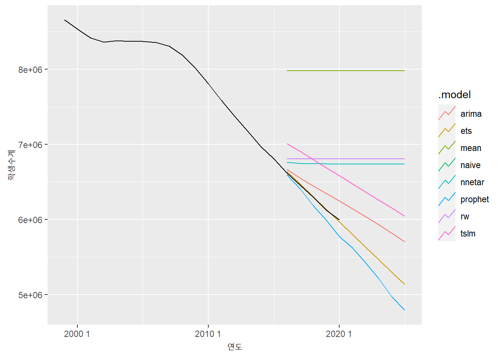
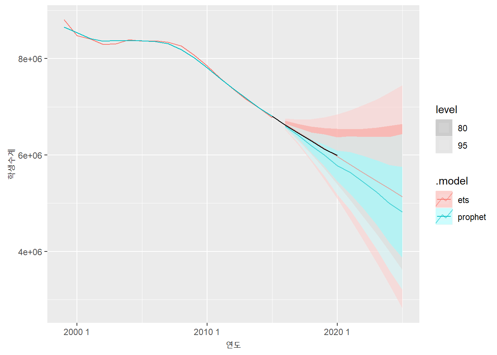
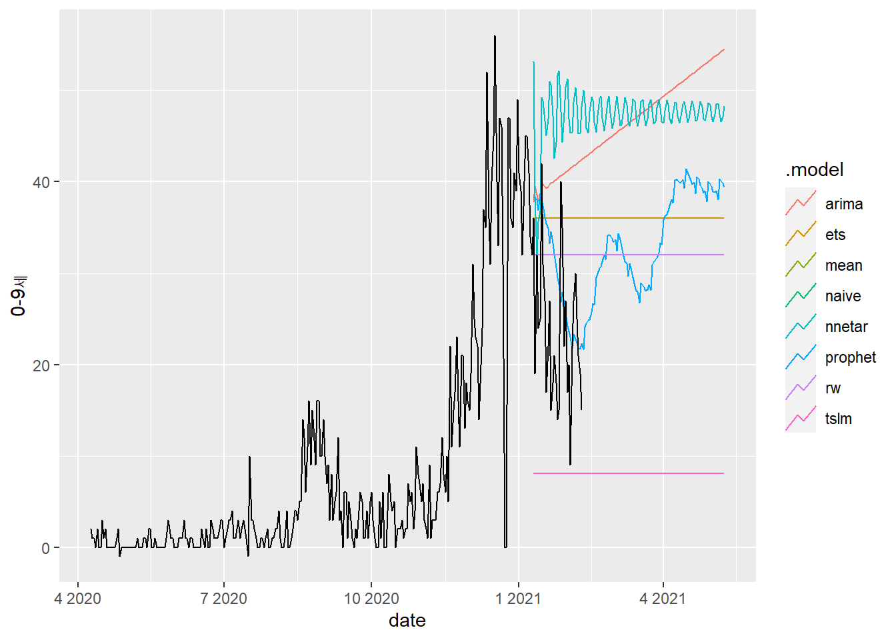

7.2 fable framework
fable 프레임워크는 패키지로 제공되는데, 시계열 데이터 분석을 위한 프레임워크로 평균모델, 랜덤워크 모델 등 심플한 모델부터 지수 평활 모델, 자기 회귀 모델과 같이 전통적으로 오랫동안 사용되어 온 모델, 신경망 모델, prophet 모델 등 최근에 개발된 모델까지 같은 인터페이스를 사용하여 모델의 생성, 예측 데이터 생성, 모델 성능 지표 산출, 모델 시각화 등을 통해 최적의 모델을 선택할 수 있는 종합적인 방법을 제공한다.
fable 프레임워크는 지수 평활 모델, 자기 회귀 모델 등을 생성할 때 선택해야 하는 모델 계수들을 자동적으로 선택해주고 일변량과 다변량을 모두 지원하기 때문에 사용하기 쉽다.
이 프레임워크는 fabletools패키지를 기반으로 작동하고 tidyverse 생태계(echosystem)에서 사용하는 워크플로우(work flow)를 준용하여 모델을 평가, 시각화 및 결합하는 도구를 제공한다.
fable 프레임워크는 forecast 패키지를 tidy 한 데이터3를 사용하는 방법을 활용하여 모델링하고 사용할 수 있는 다양한 함수들을 제공한다.
forecast 패키지는 ts 객체를 활용하기 때문에 tidy 생태계를 사용하는데 한계가 있었다. fable은 이를 극복하기 위해 tidy 생태계의 기본 데이터 객체인 tibble 객체를 기반으로 한 tsibble을 사용한다.
forecast와 fable의 차이는 다음과 같다.
| fable | forecast | |
|---|---|---|
| 객체 | tsibble | ts |
| 단일/다중 시계열 | 다중 시계열 가능 | 단일 시계열만 가능 |
| 모델 적용 | 동시에 여러 모델 적용 | 동시에 한 모델 적용 |
| 예측결과 | 점 예측과 분포 제공(hilo() 함수를 통해 autoplot()으로 플로팅 가능) |
점 예측과 예측 범위 제공 |
| 앙상블 모델예측 | 가능 | 불가 |
fable을 활용해 시계열 모델을 세우고 plotting, 예측치 생성은 다음의 순서를 통해 구현할 수 있다.
- 분석 대상 시계열 데이터를 트레이닝 셋과 테스트 셋으로 분리한다.
fable패키지의model()을 사용하여 동시에 실행되어야 할 모델들의 생성 함수를 넣어준다.
| 모델 | 함수명 | 예 |
|---|---|---|
| 선형회귀 | TSLM() | TSLM(학생수 + trend()) |
| 평균모델 | MEAN() | MEAN(학생수) |
| naive | NAIVE() | NAIVE(학생수) |
| 랜덤워크 | RW() | RW(학생수) |
| 지수평활(ets) | ETS | ETS(학생수) |
| arima | ARIMA | ARIMA(학생수) |
| 신경망 | NNETAR | NNETAR(학생수) |
| prophet | prophet(fable.prophet 패키지가 필요, 소문자) |
PROPHET(학생수) |
- 생성된 모델을 forecast() 함수를 사용하여 원하는 미래만큼(매개변수
h를 사용)의 예측값을 산출한다. autoplot()을 사용하여 plotting 한다. 원본 데이터와 같이 plotting 하려면 원본데이터를 매개변수로 넣어주고 예측 레벨을 plotting하지 않으려면level매개변수를NULL로 세팅한다.- 여러 모델들의 성능측정 지수를 확인하려면 forecast 결과 객체 테스트 데이터셋을 accuracy() 함수의 매개변수로 전달한다.
- 여러 성능측정 지수를 확인하여 가장 성능이 좋은 모델을 선정하고(필자는 RMSE가 가장 낮은 모델을 주로 사용한다.) 모델객체에 select() 함수에 해당 모델 컬럼명을 넣어준다.
- 선정된 모델을 사용하여 다시
forecast()로 미래값을 예측하고autoplot()함수로 plot을 생성한다.
7.2.1 미래 학생수 예측
fable 프레임워크로 미래 학생수를 예측해 보자.
먼저 트레이닝 셋과 테스트셋을 나눈다. 트레이닝 데이터 셋과 테스트 데이터 셋은 80:20으로 나눈다.
split <- floor(nrow(students.tsibble) * 0.8)
students.tsibble.tr <- students.tsibble[1:split, ]
students.tsibble.test <- students.tsibble[(split+1):nrow(students.tsibble), ] model()에 트레이닝 데이터 셋과 만들고 싶은 모델 함수를 사용하여 모델 데이터프레임을 만든다. 아래에서는 ets, arima, naive, tslm, rw, mean, nnetar, prophet의 8가지 모델을 만들었다.4
library(fable)
library(fable.prophet)
model.fable.students <- model(students.tsibble.tr,
ets = ETS(학생수계),
arima = ARIMA(학생수계),
naive = NAIVE(학생수계),
tslm = TSLM(학생수계 ~ trend()),
rw = RW(학생수계),
mean = MEAN(학생수계),
nnetar = NNETAR(학생수계),
prophet = fable.prophet::prophet(학생수계)
)코드설명
fable과fable.prophet패키지를 로딩 code 3 :model()함수에 총 8개의 모델이 담긴 데이터프레임을 만듬.- 컬럼명은 ets, arima, naive, tslm, rw, mean, nnetar, prophet으로 설정하여 model.fable.students 객체 생성. TSLM 모델에는 추세를 반영해 줌
위에서 생성한 model.fable.students 객체를 forecast()에 전달하여 예측 결과를 생성한다. h 매개변수로 예측 기간을 설정한다.
forecast.fable.students <- forecast(model.fable.students, h = 10)코드설명
forecast()함수에 예측에 사용할 모델 데이터프레임(model.fable.students)과 예측기간을 10년(h = 10)으로 설정하여 결과를 forecast.fable.students에 저장
autoplot()에 forecast() 결과, 원본 데이터, 레벨 매개변수를 사용하여 plot을 생성한다.
autoplot(forecast.fable.students, students.tsibble, level = NULL)
코드설명
autoplot()함수에 plot을 생성할 forecast 결과, 원본데이터, 레벨 생략(level = NULL)을 전달하여 plot을 생성
생성한 모델들의 성능 측정 지표를 확인하기 위해 forecast() 결과를 accuracy() 매개변수로 전달한다. 성능 측정에 사용하기 위해 생성해 놓았던 전체 데이터의 20% 테스트 데이터 셋을 사용하여 성능 측정 지표를 산출한다.
accuracy(forecast.fable.students, students.tsibble.test) %>%
arrange(RMSE)# A tibble: 8 x 10
.model .type ME RMSE MAE MPE MAPE MASE RMSSE ACF1
<chr> <chr> <dbl> <dbl> <dbl> <dbl> <dbl> <dbl> <dbl> <dbl>
1 ets Test -5862. 17477. 16449. -0.0862 0.263 NaN NaN -0.0726
2 prophet Test 106978. 127509. 106978. 1.74 1.74 NaN NaN 0.303
3 arima Test -155457. 173482. 155457. -2.51 2.51 NaN NaN 0.443
4 nnetar Test -450171. 499343. 450171. -7.28 7.28 NaN NaN 0.417
5 tslm Test -499968. 505229. 499968. -7.99 7.99 NaN NaN 0.427
6 naive Test -508685. 555965. 508685. -8.21 8.21 NaN NaN 0.413
7 rw Test -508685. 555965. 508685. -8.21 8.21 NaN NaN 0.413
8 mean Test -1683488. 1698372. 1683488. -26.9 26.9 NaN NaN 0.413 코드설명
accuracy()함수에 forecast 결과, 테스트 데이터 셋인 students.tsibble.test를 사용하여 성능측정 지수 데이터프레임을 생성하고 RMSE(arrange(RMSE))를 기준으로 정렬
성능 측정 지수를 확인하여 가장 성능이 좋은 모델 2개를 선택하여 저장한 데이터프레임을 생성한다.
best.model.fable.students <- model.fable.students %>%
select(ets, prophet)코드설명
- RMSE 값이 가장 작은 2개의 모델인 ets, prophet모델을
select()를 사용해 best.model.fable.students에 저장한다.
- RMSE 값이 가장 작은 2개의 모델인 ets, prophet모델을
가장 좋은 모델로 평가된 모델의 예측치를 다시 산출하고 이 결과를 사용하여 plot을 생성한다. 생성할 때는 원본 데이터를 같이 넣어주어야 데이터의 흐름을 파악하기 쉽고 모델에 의해 생성되는 적합값을 같이 plotting해주면 전반적인 모델의 예측력을 눈으로 확인할 수 있다. plot을 보다 보기 편하게 하기 위해 plot 제목과 축 제목들을 설정해 주는 것이 좋겠다. autoplot()는 ggplot2를 기반으로 생성된 plot이기 때문에 ggplot2의 plot 생성 방법을 사용하면 plot을 원하는 대로 꾸밀 수 있다.
best.model.fable.students %>% forecast(h = 10) %>%
autoplot(students.tsibble, alpha = 0.6) +
autolayer(fitted(best.model.fable.students))
코드설명
forecast()를 사용하여 RMSE가 가장 작은 ets, prophet모델이 저장된 best.model.fable.students를 사용하여 10년치 데이터를 예측(h = 10)autoplot()를 사용하여 원본 데이터와 예측치 데이터의 plot을 만들고 best.model.fable.students에 저장된 ets, prophet 모델의 적합치를 같이 plotting함.geom_point를 사용하여 원본데이터에 point를 찍어줌.
7.2.2 미래 취업자수 예측
fable 프레임워크를 사용하여 전체 취업자 수를 예측해보자.
employees$yearmonth <- yearmonth(employees$time)
employees.tsibble <- as_tsibble(employees, index = yearmonth)순서에 따라 먼저 트레이닝 데이터 셋과 테스트 데이터 셋을 나눈다. 나누는 비율은 90:10의 비율로 나누었다.
split <- floor(nrow(employees.tsibble) * 0.9)
n <- nrow(employees.tsibble)
employees.tsibble.tr <- employees.tsibble[1:split, ]
employees.tsibble.test <- employees.tsibble[(split+1):n, ]코드설명
floor,nrow를 사용하여 employees.tsibble 행갯수(nrow)의 0.8을 곱한 값의 내림값(floor)을 구해 90:10으로 나눌 위치를 split에 저장nrow를 사용하여 employees.tsibble의 1열부터 split열까지를 employees.tsibble.tr로 저장employees.tsibble의 split+1열부터 마지막 열까지를 employees.tsibble.test로 저장
model()로 앞에서 생성한 트레이닝 데이터 셋과 만들고 싶은 모델 함수를 사용하여 모델 데이터프레임를 만든다. 아래에서는 ets, arima, naive, tslm, rw, mean, nnetar, prophet의 8가지 모델을 만들었는데 tidy 데이터 객체의 특성을 활용하기 위해 파이프라인(%>%)을 사용하였다. 그리고 취업자 데이터는 계절성이 존재하기 때문에 선형 모델에 추세와 계절성을 추가하였다.
model.fable.employees <- employees.tsibble.tr %>%
model(ets = ETS(total),
arima = ARIMA(total),
naive = NAIVE(total),
tslm = TSLM(total~trend() + season(12)),
rw = RW(total),
mean = MEAN(total),
nnetar = NNETAR(total),
prophet = prophet(total)
)코드설명
model()을 사용해 8가지 모델을 생성. model()의 호출은 employees.tsibble.tr 데이터를 첫번째 매개변수로 사용하기 위해%>%을 사용하여 전달.- 실행 결과는 model.fable.employees에 저장.
앞에서 생성한 model.fable.employees을 forecast()를 사용하여 24개월 미래 데이터를 예측한다.
forecast.fable.employees <- model.fable.employees %>% forecast(h = 24)코드설명
- model.fable.employees를
%>%을 이용하여forecast()의 첫번째 매개변수로 전달.forecast()의 예측기간을 설정하기 위해h = 24를 설정. - 실행 결과는 forecast.fable.employees에 저장.
- model.fable.employees를
예측된 데이터를 사용하여 plot을 만들고 각각의 모델에서 산출한 미래 예측치를 살펴본다.
forecast.fable.employees %>%
autoplot(employees.tsibble, level = NULL) +
labs(title = 'fable로 생성한 8가지 모델 예측 plot', x = '년월', y = '취업자수')
코드설명
forecast()로 예측한 24개월이후 결과가 저장된 forecast.fable.employees를%>%로autoplot()으로 전달해서 plot을 생성.
육안으로는 어느 모델이 우수한지 알아보기가 힘들다. 따라서 성능 측정 지표를 확인해서 가장 성능이 좋은 모델을 선택한다
forecast.fable.employees %>% accuracy(employees.tsibble.test) %>% arrange(RMSE)# A tibble: 8 x 10
.model .type ME RMSE MAE MPE MAPE MASE RMSSE ACF1
<chr> <chr> <dbl> <dbl> <dbl> <dbl> <dbl> <dbl> <dbl> <dbl>
1 naive Test 83.4 259. 247. 0.301 0.917 NaN NaN 0.203
2 rw Test 83.4 259. 247. 0.301 0.917 NaN NaN 0.203
3 mean Test 560. 611. 560. 2.07 2.07 NaN NaN 0.203
4 tslm Test -728. 738. 728. -2.70 2.70 NaN NaN -0.366
5 ets Test -730. 740. 730. -2.71 2.71 NaN NaN -0.0628
6 arima Test -833. 840. 833. -3.10 3.10 NaN NaN -0.289
7 prophet Test -828. 840. 828. -3.08 3.08 NaN NaN -0.397
8 nnetar Test -872. 965. 872. -3.24 3.24 NaN NaN 0.492 코드설명
forecast()로 예측한 24개월이후 결과가 저장된 forecast.fable.employees를%>%로accuracy()로 전달해서 성능측정 지수를 산출.- 성능측정 지수를 산출하는 데이터는 테스트 데이터 셋을 사용하고 결과를 RMSE로 정렬한 결과를 출력.
화면에 출력된 성능측정 지수를 확인하여 가장 좋은 모델 2가지를 가지는 데이터프레임을 만들어준다.
best.model.fable.employees <- model.fable.employees %>%
select(naive, rw)코드설명
- 여러가지 모델을 만들어 담아놓은 model.fable.employees 데이터프레임에서 RMSE가 가장 작은 두 모델인 naive와 rw모델을
select()를 사용하여 best.model.fable.employees에 저장.
- 여러가지 모델을 만들어 담아놓은 model.fable.employees 데이터프레임에서 RMSE가 가장 작은 두 모델인 naive와 rw모델을
가장 좋은 모델로 평가된 모델의 예측치를 다시 산출하고 이 결과를 사용하여 plot을 생성한다. 앞에서 설명한 바와 같이 plot 생성시에는 원본 데이터와 모델의 적합값을 같이 넣어주는 게 좋고 plot을 보다 보기 편하게 하기 위해 plot 제목과 축 제목들을 설정해 주는 것이 좋다.
best.model.fable.employees %>%
forecast(h = 12) %>%
autoplot(employees.tsibble, level = NULL, lwd = 1) +
autolayer(fitted(best.model.fable.employees), lwd = 1) +
geom_point(aes(x = yearmonth, y = total)) +
labs(title = '전체 취업자수 예측 모델', x = '년월', y = '취업자수')
코드설명
- 가장 RMSE가 낮은 두 모델이 담긴 best.model.fable.employees을
%>%을 사용하여forecast()에 전달. forecast()결과를 %>%를 사용하여autoplot()에 전달하는데 원본데이터를 같이 plot하기 위해 원본데이터인 employees.tsibble을 넣어주고 여러 모델 plot이 겹치기 때문에level = NULL로 설정, 예측치 라인을 좀 두껍게 해주기 위해lwd = 1로 설정.autolayer()를 사용하여 두가지 모델의 적합값(fitted(best.model.fable.employees))을 그려주고 예측라인의 두께를 설정(lwd = 1).geom_point()로 원본데이터들의 정확한 지점을 표기.labs()를 사용하여 plot 제목과 축제목을 설정.
- 가장 RMSE가 낮은 두 모델이 담긴 best.model.fable.employees을
7.2.3 미래 코로나 확진자수 예측
0~9세의 코로나 확진자수를 사용하여 미래 코로나 확진자수를 예측해본다. 앞의 두 예제와 달리 코로나 확진자수는 일별 데이터인데 중간중간 데이터가 빠진 날이 있다. 예측을 위해서는 빠진 날짜의 데이터를 채워 주어야 하는데 fill_gaps()를 사용하여 빠진 날짜의 데이터를 0으로 채워 넣었다.
fill.covid19.tsibble <- fill_gaps(covid19.tsibble, `0-9세` = 0)코드설명
fill_gaps()는 결측치를 채워주는 함수로 여기서는 wide.covid19.by.age.tsibble의 0-9세 컬럼의 결측치를 0으로 채움.- 결과를 fill.covid19.by.age.tsibble에 저장
fill.covid19.by.age.tsibble을 트레이닝 셋과 테스트 셋으로 분리한다. 분리 비율은 90:10으로 설정하였다. 분리 비율은 정해진 값은 없기 때문에 분석자가 데이터를 분석하기 위한 적절한 비율을 선택한다.
split <- floor(nrow(fill.covid19.tsibble) * 0.9)
n <- nrow(fill.covid19.tsibble)
fill.covid19.tsibble.tr <- fill.covid19.tsibble[1:split, ]
fill.covid19.tsibble.test <- fill.covid19.tsibble[(split+1):n, ]앞선 예제들과 같이 8개의 모델을 생성한다.
model.covid19.tsibble <- fill.covid19.tsibble.tr %>%
model(ets = ETS(`0-9세`),
arima = ARIMA(`0-9세`),
naive = NAIVE(`0-9세`),
tslm = TSLM(`0-9세`),
rw = RW(`0-9세`),
mean = MEAN(`0-9세`),
nnetar = NNETAR(`0-9세`),
prophet = prophet(`0-9세`)
)코드설명
- 각각의 모델 생성 함수에 예측하기를 원하는 컬럼인 ’0-9세’컬럼을 설정. 생성된 결과는 model.covid19.by.age.tsibble에 저장
생성된 모델에 기반한 예측 결과를 forecast()를 사용하여 산출한다.
forecast.covid19.tsibble <- model.covid19.tsibble %>%
forecast(h = 120)코드설명
- model.covid19.by.age.tsibble를
%>%을 사용하여forecast()에 전달하는데 120일 이후 데이터를 예측하기 위해h = 120을 설정. - 결과는 forecast.covid19.by.age.tsibble에 저장
- model.covid19.by.age.tsibble를
예측 결과를 확인하기 위해 plot을 생성한다. 여러 plot이 겹치기 때문에 다소 보기는 힘들다.
forecast.covid19.tsibble %>% autoplot(fill.covid19.tsibble, level = NULL)
코드설명
- forecast() 결과를 %>%을 사용하여 autoplot()에 전달.
- autoplot()는 원본데이터를 같이 plot하고 예측 범위를 제거
육안으로는 가장 좋은 모델 선정이 어렵기 때문에 성능 측정 지표를 확인한다.
forecast.covid19.tsibble %>% accuracy(fill.covid19.tsibble.test) %>% arrange(RMSE)# A tibble: 8 x 10
.model .type ME RMSE MAE MPE MAPE MASE RMSSE ACF1
<chr> <chr> <dbl> <dbl> <dbl> <dbl> <dbl> <dbl> <dbl> <dbl>
1 prophet Test -6.34 10.5 8.87 -39.0 46.6 NaN NaN 0.369
2 naive Test -8.39 11.4 10 -51.7 55.8 NaN NaN 0.234
3 rw Test -8.39 11.4 10 -51.7 55.8 NaN NaN 0.234
4 ets Test -12.4 14.6 13.1 -70.9 72.4 NaN NaN 0.234
5 mean Test 15.6 17.4 15.6 61.8 61.8 NaN NaN 0.234
6 tslm Test 15.6 17.4 15.6 61.8 61.8 NaN NaN 0.234
7 arima Test -16.8 18.7 16.9 -92.1 92.5 NaN NaN 0.281
8 nnetar Test -22.8 24.6 22.8 -121. 121. NaN NaN 0.452코드설명
forecast()로 예측한 120일이후 결과가 저장된 forecast.covid19.by.age.tsibble를%>%로accuracy()로 전달해서 성능측정 지수를 산출.- 성능측정 지수를 산출하는 데이터는 테스트 데이터 셋을 사용하고 결과를 RMSE로 정렬한 결과를 출력.
성능 측정 지수가 가장 좋은 모델을 선택한다.
best.model.covid19.tsibble <- model.covid19.tsibble %>% select(prophet)코드설명
- 8가지 모델이 저장되어 있는 model.covid19.by.age.tsibble에서 가장 좋은 성능(RMSE값이 가장 작은)인 prophet모델을 선택하여 best.model.covid19.by.age.tsibble에 저장
선정된 베스트 모델의 예측 plot을 생성하여 전체 데이터와 예측데이터를 살펴본다.
best.model.covid19.tsibble %>%
forecast(h = 120) %>%
autoplot(fill.covid19.tsibble, lwd = 1, alpha = 0.6) +
autolayer(fitted(best.model.covid19.tsibble), lwd = 1) +
geom_point(aes(x = date, y = `0-9세`)) +
labs(title = '코로나 확진자수 예측', x = '년월일', y = '확진자수')
코드설명
- 가장 RMSE가 낮은 두 모델이 담긴 best.model.covid19.by.age.tsibble
%>%을 사용하여forecast()에 전달. forecast()결과를%>%를 사용하여autoplot()에 전달하는데 원본데이터를 같이 plot하기 위해 원본데이터인 fill.covid19.by.age.tsibble 넣어주고 예측 범위를 투명하게 설정하기 위해alpha = 0.6로 설정, 예측치 라인을 좀 두껍게 해주기 위해lwd = 1로 설정.autolayer()를 사용하여 두가지 모델의 적합값(fitted(best.model.covid19.by.age.tsibble))을 그려주고 예측라인의 두께를 설정(lwd = 1).geom_point()로 원본데이터들의 정확한 지점을 표기.labs()를 사용하여 plot 제목과 축제목을 설정.
- 가장 RMSE가 낮은 두 모델이 담긴 best.model.covid19.by.age.tsibble
tidy 데이터의 특징과 활용방법은 [https://statkclee.github.io/data-science/data-handling-tidyr.html](https://statkclee.github.io/data-science/data-handling-tidyr.htmldmf)을 참조하라↩︎
예제 실행 시
prophet()에서 해당 컬럼을 찾을 수 없다는 오류가 나는 경우가 있음.fable.prophet패키지의prophet()과prophet패키지의prophet()이 같은 함수명이기 때문에 발생하는 오류임. 따라서 정확한 패키지 명을 같이 호출해주거나 패키지 로딩 순서를 바꿔주며 해결됨↩︎
코드설명
students.tsibble의 행갯수(
nrow)의 0.8을 곱한 값의 내림값(floor)을 구해 80:20으로 나눌 위치를 split에 저장students.tsibble의 1열부터 split열까지를 studets.tsibble.tr로 저장
students.tsibble의 split+1열부터 마지막 열까지를 studets.tsibble.test로 저장